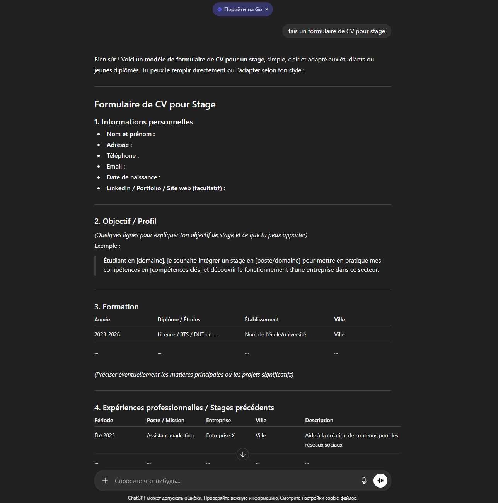
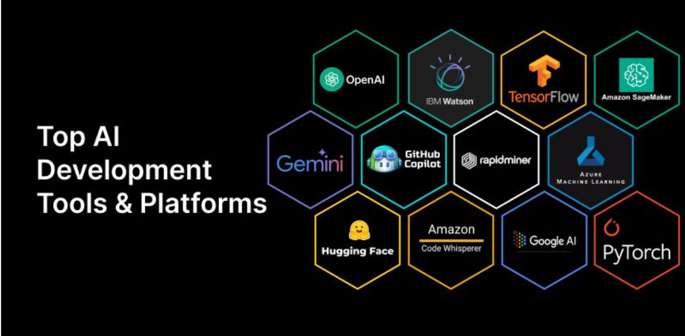
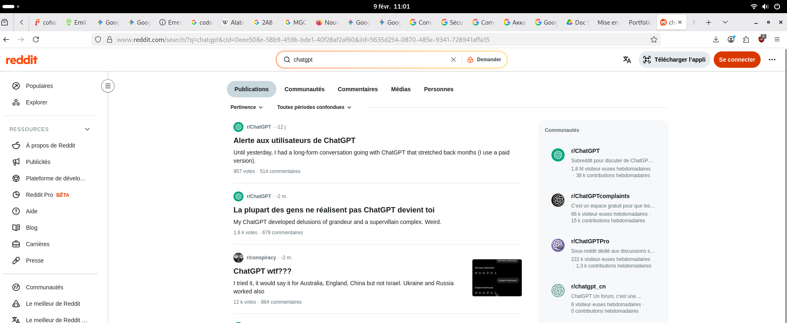
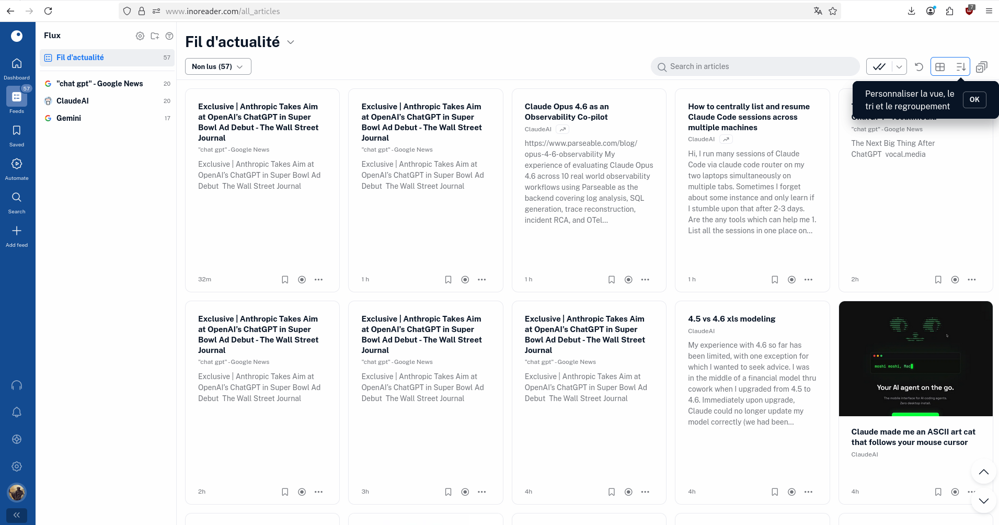
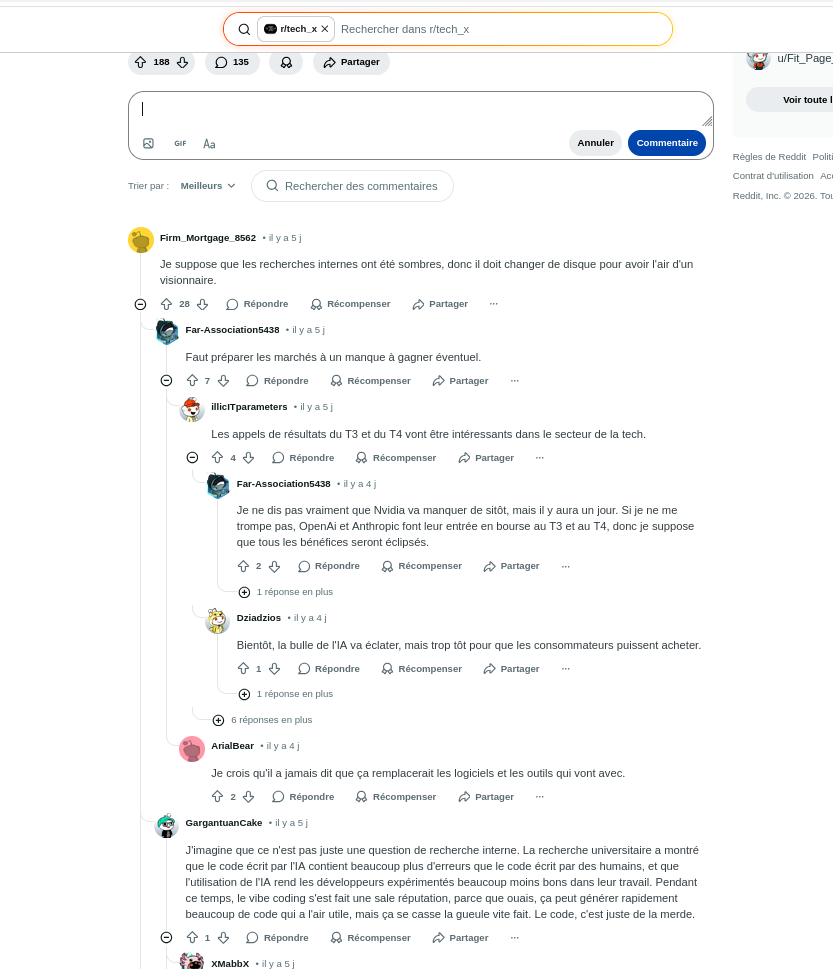
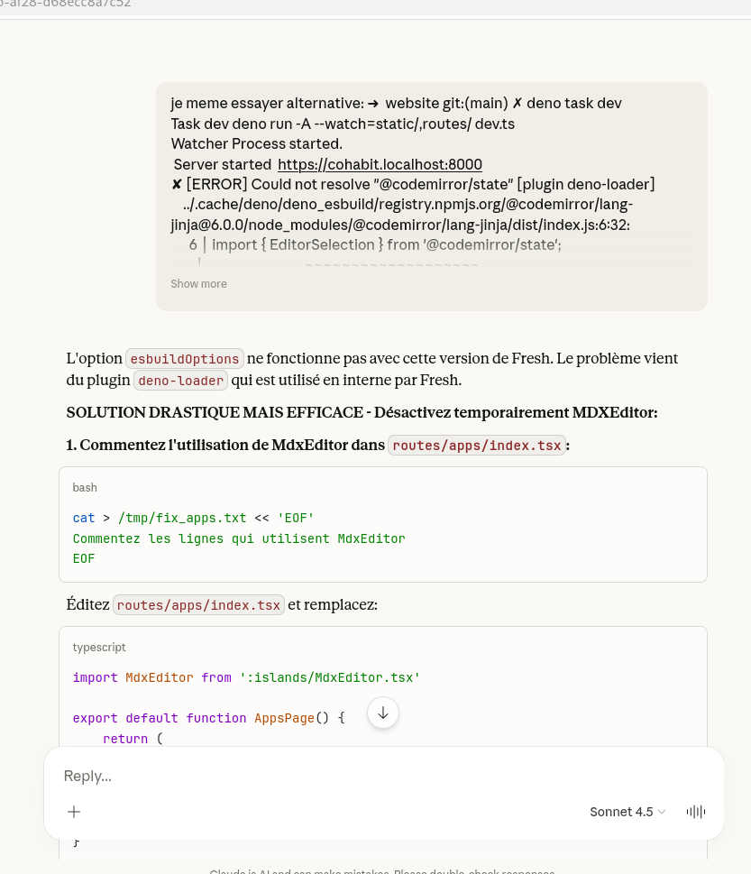

Suivi, curation et mise en pratique des évolutions de l'intelligence artificielle
La veille technologique est une activité qui consiste à s'informer très souvent sur les nouveautés d'un sujet technique. Ce n'est pas juste lire pour s'amuser, c'est une méthode pour rester compétitif et efficace dans son travail.
J'ai choisi l'IA Générative car c'est un domaine qui bouge tous les jours dans l'informatique. Il est important de savoir comment ces outils évoluent pour mieux programmer et protéger les données.

Pour que ma veille soit utile, je ne regarde pas "tout" sur l'IA, car il y a trop d'informations. J'ai divisé ma recherche en trois parties :

Pour avoir des informations de qualité, j'ai choisi des sources sérieuses. C'est l'étape de la curation : on choisit ce qui est bon et on jette ce qui est inutile.

Pour ne pas perdre de temps, j'utilise un agrégateur de flux. C'est un logiciel qui va chercher les articles tout seul sur mes sites préférés et les rassemble au même endroit.

Une veille est inutile si on oublie tout le lendemain. Il faut stocker l'information et la partager avec les autres.

La veille doit finir par une mise en pratique pour tester ce qu'on a lu. L'auto-formation est une partie importante de mon apprentissage en BTS.
